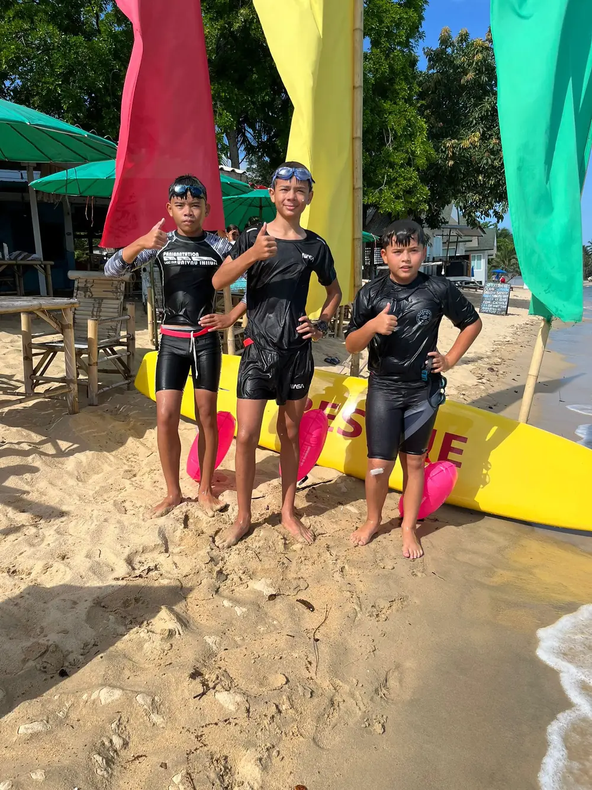
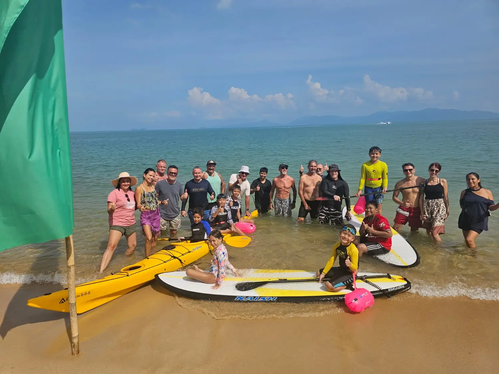

Ocean Safety
Children learn how to read the beach, understand changing water conditions and stay calm in the ocean.
Life Saving
Ocean safety and rescue skills for island children.

Ocean Safety
Life Saving brings the youth beach program, swimming confidence, rescue-board skills, first aid awareness and safe beach habits into one clear pathway.
The goal is to help children understand the ocean, stay calm, use safety equipment and grow into future local beach lifesavers.

Children learn how to read the beach, understand changing water conditions and stay calm in the ocean.
Rescue boards, floating aids, teamwork and practical safety routines build confidence.
The program helps create the next generation of trained local beach lifesavers.